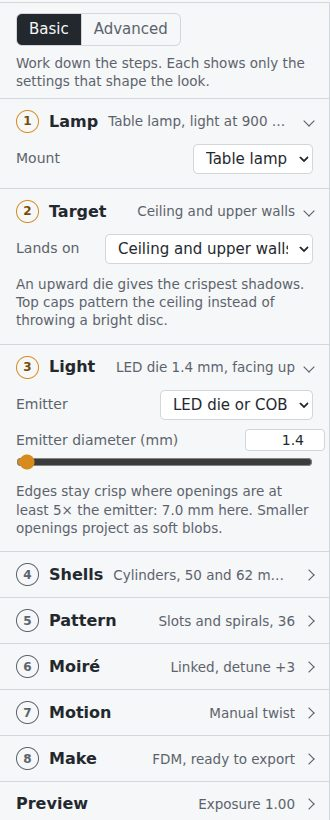
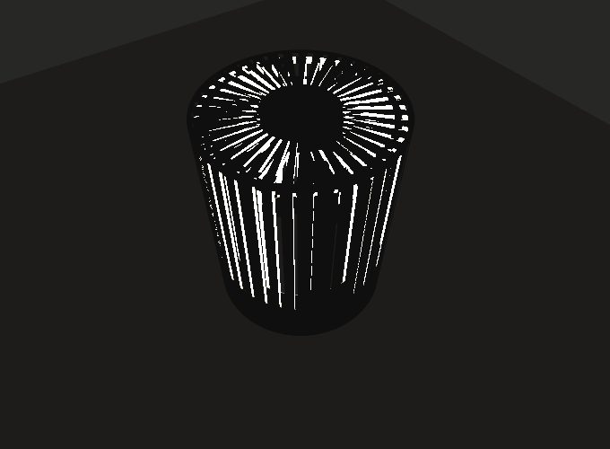
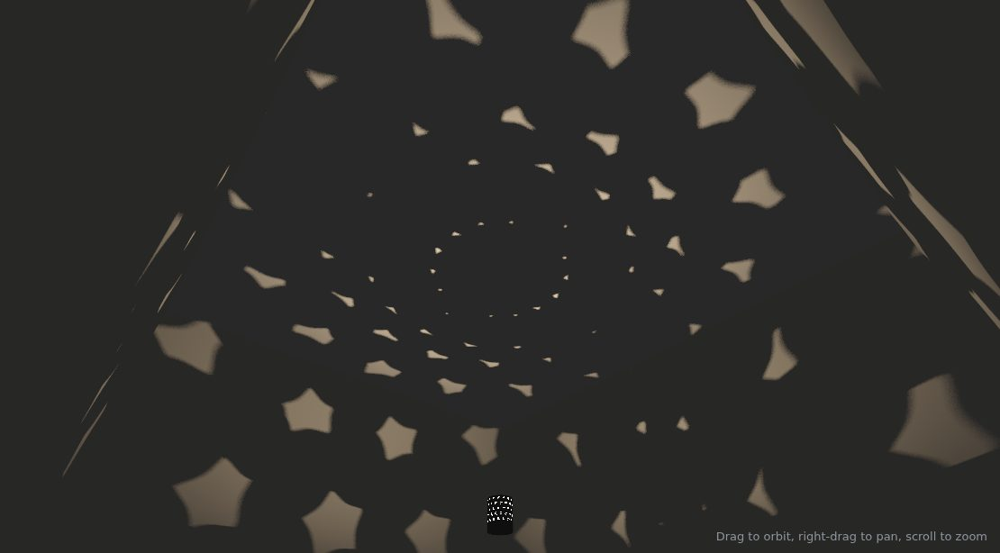
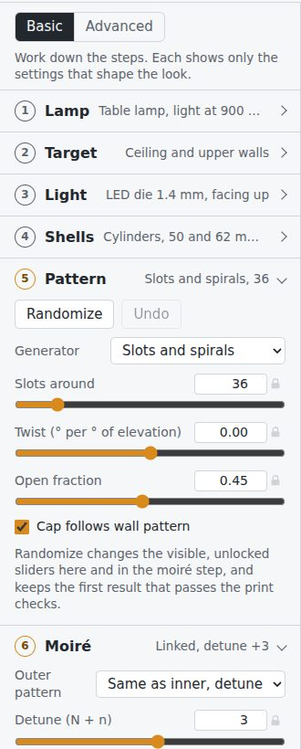
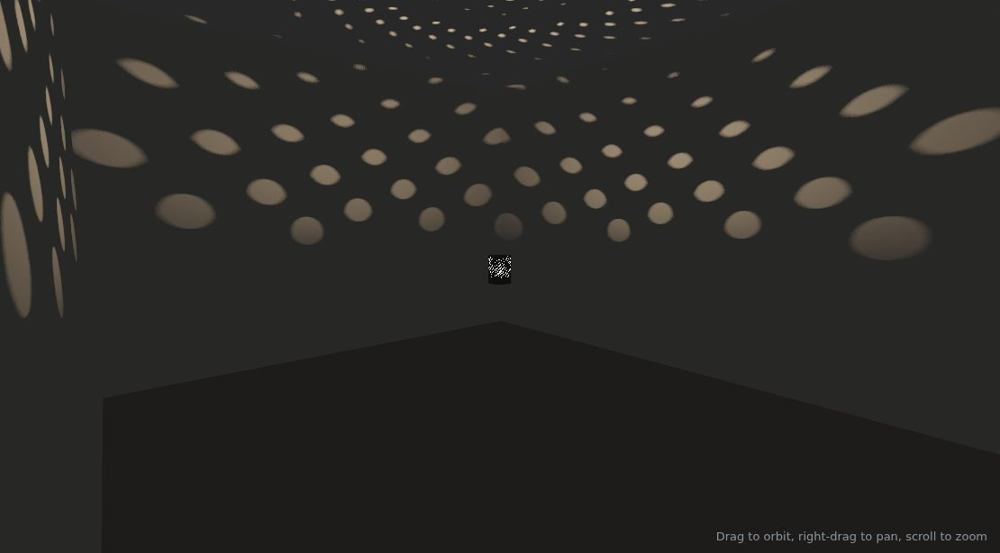
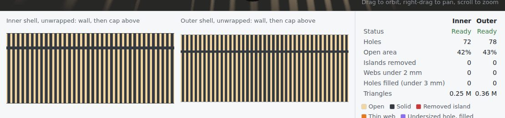

How the light works
Three rules explain almost everything you'll see in the preview.
Sharpness comes from the emitter, not the distance
An edge's blur depends on the opening size divided by the emitter size, and it doesn't change with how far away the wall is. Keep openings at least five times the emitter: a 1.4 mm LED die wants openings of 7 mm or more. Smaller openings still pass light, but they project as soft blobs.
The room sees both shells at once
From the LED, each shell is a mask. A point in the room is lit only where the ray from the LED passes through an opening in both. Tenebrae cuts every hole along those rays, so a 3 mm wall doesn't narrow the beam.
Moiré multiplies motion
With N slots on the inner shell and N + n on the outer, the room shows n bright lobes. Twisting the outer shell moves those lobes N/n times faster than the shell turns, and the look repeats every 360° ÷ (outer count) of twist.
Your first lamp
The studio opens on a mirrored-spiral pendant. For this walkthrough, choose Table uplight, auto-fitted from Load a preset instead: two capped cylinders, 36 and 39 slots, and an upward-facing LED die. Each step below matches a numbered step in the studio's sidebar. Stay in Basic until step 8.

The sidebar reads top to bottom in the order the decisions depend on each other. Each step's header shows its current choice, so a collapsed sidebar is a summary of the whole lamp. Advanced reveals every parameter; Basic keeps the 23 that shape the look.
1Lamp
Choose Table lamp or Pendant.
Sets the light height, 900 mm for a table lamp and 1900 mm for a pendant, and re-frames the camera. It also decides where the stem enters, from below on a table lamp and from above on a pendant, so capped ends on that side get stem bores.
2Target
Pick where the pattern should land. This is the decision the rest follow, because it sets which way the emitter faces and whether the shells get top caps.
- Ceiling and upper walls: upward LED die, top caps on. The v1 lamp.
- Walls at lamp height: vertical filament, caps off. Vertical slots stay sharp; horizontal features blur.
- Floor and lower walls: downward die, bottom caps on.
- Everywhere: all-round light and both ends capped, so the ceiling and floor carry the pattern too.
Changing the target tells you exactly what it switched, in a message at the bottom of the screen.
3Light
Choose the emitter and set its size. The note under the slider gives the smallest opening that stays crisp for that emitter.
For a real build: Luminus SST-20, 2700 K, CRI 95. Its emitting area is about 1.4 mm across; the dome may make it look larger, which the coupon print in Print and assemble will measure.
4Shells
Set the inner shell's Shape, Radius, how far its top sits above the light and its bottom below the light, and whether it has Top caps and Bottom caps.
Capped ends need a way in for the stem. On the stem side, the inner cap gets a 6 mm-radius bore that the 10 mm LED board fits through, and the outer cap a 4.5 mm bore that turns on an 8 mm stem as a plain bearing. Bores are under Advanced.
Two shells both closed at both ends can't nest, so an outer shell capped at both ends exports as two halves split at the light's plane. They close around the inner shell; the joint is a flat ring, and its solid seam band throws a thin dark line at lamp height.
Leave Fit outer shell automatically on. The outer shell then follows the inner one with a single gap, around the wall and above the cap. 9 mm is a good start: close enough that both shells stay sharp, wide enough to print and assemble.
Cylinders suit FDM. Spheres print cleanly only on SLS: split for FDM, their seam band throws a dark ring, and a capped sphere needs supports.
5Pattern
Choose a generator and tune its two to four sliders: slots and spirals, rings and waves, phyllotaxis dots, Voronoi cells, or a superformula lattice.
For crisp rays on the uplight's shells, use 20 to 24 slots. That gives openings of 6 to 7.5 mm, at least 4.5 times the die. The preset's 36 slots give softer, finer rays.
Keep Cap follows wall pattern on: slots carry on as spokes across the cap, and the whole shell repeats at one twist period, which suits a hand-twisted lamp.
Randomize lives here too. See Explore variations.
6Moiré
Same as inner, detuned copies the inner pattern to the outer shell and adds Detune to its count. A detune of 2 or 3 gives two or three broad lobes around the room; larger detunes get busier. Mirror reverses the outer pattern, turning twisted slots into a crossing lattice.
Independent gives the outer shell its own generator, for pairings such as Voronoi cells over rings. The note under the controls counts the lobes and how much they amplify a twist.
7Motion
Use Manual twist for v1. Drag Outer shell twist and use Bookmark this twist for looks you want to find again. The note gives the repeat period: 9.23° for 39 slots. Put tick marks on the physical rim every quarter of that period.
Motor shows both shell speeds, plays the spin, and says how fast the room pattern turns.
8Make
Choose FDM, SLS / MJF or Laser-cut sheet; this sets the minimum web, minimum hole and clearance. The line under it says whether the design is ready. When it is, use Export in the header.
Then open Export in the header. Choose 3D print (STL) or Laser cut (SVG, DXF), which shells to export, and whether caps are attached, separate or left out. Separate caps become flat discs, so tubes and discs both print without support and the outer shell needs no seam split.
For laser cutting, set the sheet thickness in the menu: 0.5 to 1 mm polypropylene or black card rolls cleanly. Each wall opens into a rectangle that rolls back into the tube, and a backing strip with matching holes closes the seam. With Tabs into slots, the wall's capped ends carry tabs that push through slots in the caps; fold the extra flat over the cap to lock it. Press-fit inside gives plain discs that press into the tube ends instead. Kerf is compensated. Save preview image saves the current view as a PNG.
In Advanced you can change the minimums, the shell clearance, filling of undersized holes, sphere splitting and the grid resolution. A coarser grid gives smaller files.
Use the Room, Wall, Ceiling and Lamp buttons to jump between viewpoints, and Exposure under Preview to brighten the room. Soft shadows sharpen over a second or two after each change.


Explore variations
Load a preset in the header groups designs into table uplights, other targets and older studies. Presets replace the shells and the moiré, and the light where a preset needs a particular one. Your room and fabrication settings stay as they are.

Randomize, or R, changes the visible, unlocked sliders in Pattern and Moiré. It tries up to ten variations and keeps the first one that passes the print checks. Undo brings the previous pattern back.
The lock beside a slider keeps that value through every randomize. In Basic only the basic sliders change; switch to Advanced to let wobble, jitter or seed change too.
Save design downloads the design as JSON and Open design loads it again. The studio also remembers your last design in this browser.

Read the checks
Under the preview, each shell is unwrapped flat: the wall at the bottom, the cap above the solid corner band. Colours mark what the fabrication checks changed or found.

| Row or colour | What it means | What to do |
|---|---|---|
| Status: Blocked | The shell can't be made. The notes below the table say why. | Most often the pattern cuts the shell into rings: lower the open fraction or add bridges. |
| Islands removed | Solid pieces with no path to a rim, dropped automatically. | Nothing, unless you miss them in the preview. |
| Webs under the minimum | Solid strips thinner than the process can print. | Lower the count or the open fraction, or enlarge the cap hub. |
| Holes filled | Holes too small to print anywhere, filled solid. Usually slivers where a pattern meets a rim. | Usually nothing. Switch filling off under Make, Advanced, to see them as open. |
| Triangles | Mesh size. Each million triangles is about 50 MB of STL. | Raise the grid resolution for smaller files. |
The notes list also reports the closest gap between the shells, whether the emitter fits inside the inner shell, and the print orientation.
Print and assemble
- Print coupons first. Flat plates 3 and 4 mm thick, with slot and hole ladders from 2 to 10 mm. Shine the real LED through them onto a wall. You'll learn the true blur, which holes FDM keeps open, and how much light the material leaks.
- Use matte black PETG or ASA. PLA softens around 60 °C, and light-coloured material glows, which washes out contrast.
- Prefer laser for steep twists. Slots twisted past about 0.8 overhang more than FDM can bridge and turn to spaghetti; laser-cut thin sheet has no such limit.
- Print capped cylinders cap-down. The cap sits flat on the bed and needs no support. A shell capped at both ends is a half at a time: each half prints cap-down with its flat seam face up. With separate caps, print the tubes upright and the discs flat. Slots on vertical walls print cleanly; rings and dots leave overhanging hole tops, because Tenebrae doesn't make teardrop shapes yet.
- Mount the light at the centre. SST-20 on a 10 mm copper board, on an aluminium stem at the shell centre, within ±3 mm. Drive it with a Mean Well LDD-700L at 350 to 700 mA from a certified 24 V adapter, and dim with the driver's analogue input.
- Let the outer shell turn with friction. Run its bottom rim on a printed V-groove race with 6 mm BBs, plus a felt pad for drag so it stays where you leave it.
interface.jsonhas the rim diameters and gaps for designing this in CAD.
What the export contains
The 3D print export builds the meshes at the full grid resolution, checks each one is watertight, and downloads one zip. The laser export downloads an SVG and a DXF per part instead, with a checks.txt listing sheet sizes and cut length.
inner-shell.stl one watertight part (lower/upper halves when split;
-wall, -top-cap and -bottom-cap when caps are separate)
outer-shell.stl
design.json reopen with Open design
interface.json end diameters, cap planes, hub and bore radii, stem side, closest gap,
required clearance, twist periods, bookmarks
checks.txt triangle counts, watertight results, hole and web counts, notesUnits are millimetres. The light centre is the origin and z points up. Capped shells export as one cup each, with the wall and cap as a single part.
Known limits
- Open ends throw bright discs; cap them to carry the pattern instead. Solid cap hubs leave a dark spot directly above and below.
- The preview shows direct light only. A real room adds bounce light, so raise Ambient fill to judge contrast.
- The emitter lights all directions equally unless you set it to upward or downward.
- Hole walls aren't drawn in the lamp close-up; the room projection is exact.
- Where the wall meets a cap, the top edge has a chamfer of up to one grid cell (0.7 mm by default).
Controls
| Orbit | Drag the preview |
| Pan | Right-drag, or Shift and drag |
| Zoom | Scroll, or pinch |
| Randomize | R, when no text field has focus |